Finding an undiscovered debug/cheat menu unlock code in DID’s F-22 Total Air War
F-22 Air Dominance Fighter was released on Steam this week, with a Windows 11-compatible executable, original assets, sadly no HOTAS support at launch (although that is being worked on), and a surprising price of £20.99 - that’s about three times the standard price of similar era sims on digital stores. Someone has vastly overestimated the nostalgia market.
Anyway, while I wait for a GoG release (and deep discount!) of the F-22 ADF rerelease, it made me think about F-22 Total Air War - the promised dynamic campaign expansion pack to ADF that later morphed into a full price sequel within a year. Specifically, the fact that I couldn’t find any mention of how to unlock the debug/cheat mode in the game.
This
post from Feb 2022 noted that the debug/cheat mode could be enabled
in F-22 Air Dominance Fighter by holding ALT and typing
D I D I
T. Later, this post
from June 2024 noted a similar mechanism for EF2000, this time holding
ALT and typing T O P
S I M.
In the Discord when the EF2000 cheat was found, the locator (Krishty, owner of the linked forum) noted:
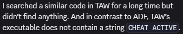
Disheartening. However, on the forum, another user claimed:
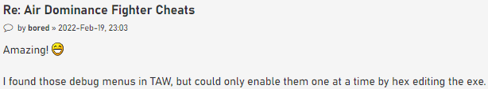
Intriguing!
As a reverse engineer, this piqued my interest. Apparently the people that have spent years reversing TAW (and whose hard work has been leveraged in the ADF Steam release) couldn’t find the TAW debug enabler. I couldn’t locate anything online to suggest anyone knew how to enable it via a typed code. But some of the functionality still seemed to be present in the exe. Maybe the enabler was removed at compile time? Maybe it had been obfuscated but still existed? Time to find out!
Firstly, I like to reverse applications live via a debugger, but thanks to Microsoft’s unwavering commitment to backwards compatibility, the original TAW release doesn’t run in Windows 11, and my reversing debugger doesn’t run on Windows 9x. So static analysis is the way forward. I dig out my TAW big box, spin up a Win95 VM, and install the game:
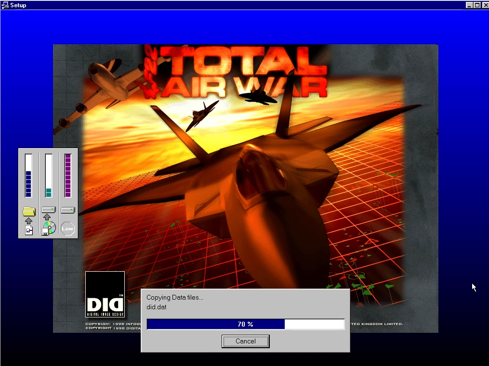
I select Direct3D mode instead of Glide, hoping that this will be more compatible with a vanilla VM install. A quick check and the game runs. Then I copy out the f22.dat file to my host PC for some static analysis in IDA (the _f22.exe file is a 35kb stub; f22.dat is a 3,509kb file that is actually a x86 32-bit PE with a different extension, in my case dated 12-Aug-1998).
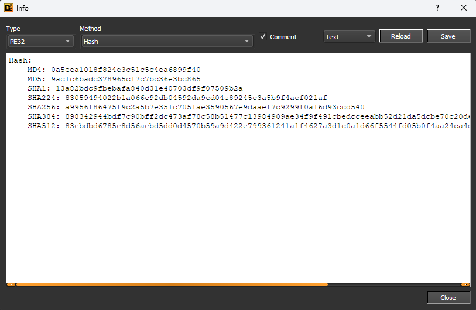
I start by assuming any unlock code would involve holding down ALT
and typing in a code, as was the case with EF2000 (ALT +
T O P S
I M) and ADF (ALT +
D I D I
T), so start looking for key-related functions. I search
strings for “key” and uncover some potentially useful strings like
WM_SYSKEYDOWN and WM_SYSKEYUP that are Windows
messages for system keys like ALT being pressed. MSDN
says that these events are posted “when the user presses the F10 key
(which activates the menu bar) or holds down the ALT key and then
presses another key.” I also find some strings that contain
LEFT[RIGHT] WINDOWS KEY TRAPPED!!!!!\n which could also be
useful to narrow down keyboard handling.
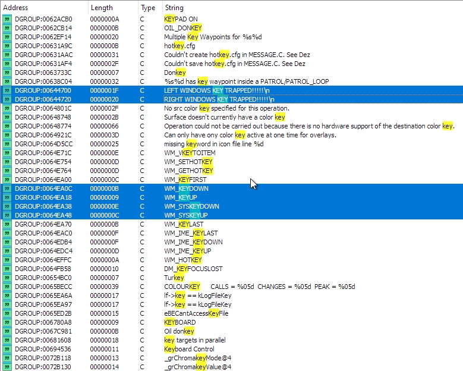
On a hunch, I also filter for “scrn” as one of the ADF debug options
saves a screenshot with a filename SCRNx.LBM, sure enough
0x62ddc4 contains the string SCRN%hd.LBM which
should help us narrow down the screenshot function, if it still
exists.
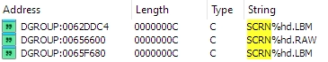
Finally, the EF2000 debug options print strings with flight model
info, such as “Pitch”, “Angle of attack”, “Altitude”, “Mach”, etc.
Filtering strings for potential format strings containing these terms
brings up a number of probable candidates, e.g. 0x630d68
which contains “ALTITUDE %5.0f FT TRUE AIRSPEED: %4.0f KTS RATE OF
CLIMB: %5.0f FT PER MIN” - a classic example of a debug format
string.
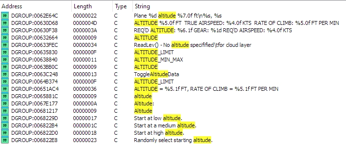
Armed with several attack vectors, I start looking into where these strings are referenced in the code.
I decide to try working in reverse from the screenshot function first, assumming that a) the code still exists, and b) it is still accessed via the Debug/Cheat mode. I can hopefully work backwards from the filename, to the function that takes the screenshot, to the link back to the input used, and potentially a flag that saves whether the debug/cheat mode is active or not. Then I can search for where that flag is set, and what the conditions are to enable it. That’s the plan.
The screenshot filename string is only used by
sub_411014:
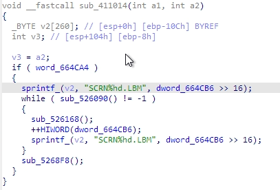
We can immediately see that the top 16 bits of 0x664cb6
(dword_664cb6 >> 16 or
HIWORD(dword_664cb6)) seems to be the screenshot count - it
calls sprintf to insert this value into the
SCRNx.LBM filename, and increments it in line 13. It looks
like this while loop keeps retrying filenames until it finds a valid
one. We also see the entire function only does something if
0x664ca4 is nonzero, which looks like useful information to
note down.
I rename sub_411014 to
FUN_411014_Save_Screenshot, and look for what calls it. It
is only called from sub_412d88, which is what seems to be a
long list of pointers being saved into co-located memory locations,
looking a lot like a function pointer table:
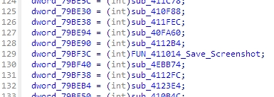
At the top of this function, it has a loop:
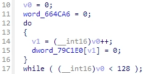
It loops from 0 to 127 (counter variable v0) setting
0x79c1e0[i] to zero. Then it sets arbitrary values in that
128 item memory range to function pointers. So 0x79c1e0
seems like a 128 element array of function pointers, where 75 elements
are assigned a function pointer and the rest are left null. Later on in
the function it copies the contents of 0x79c1e0 into two
new arrays, 0x79bde0[] and 0x79bfe0[], then
adds and/or overwrites some of these existing function pointers with new
ones.
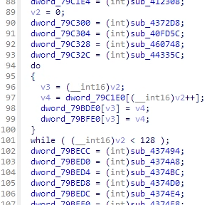
So these three arrays (0x79c1e0[],
0x79bde0[] and 0x79bfe0[]) seem to be
important function pointer maps, and one of them maps to our screenshot
saving function. Perhaps these are lookup tables for event or keyboard
handling?
The only function in which these three arrays are accessed, outside
of the initialisation function above, is sub_412ca0.
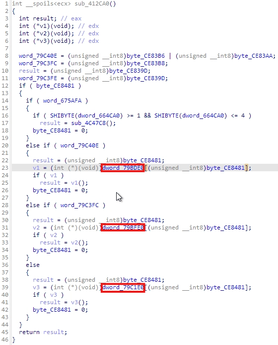
We can clearly see here a pattern: if 0x79c40e is
nonzero, we index into 0x79bde0[] using the index
0xce8481, and if the result is not null, we call the
referenced function. Else, if 0x79c3fc is nonzero, we do
the same into 0x79bfe0[], else, we call into
0x79c1e0. The index in all cases is 0xce8481,
which is then set to zero after being used, so this is important to
find. And at the top of the function we see that the actual conditions
are (0xce83b6 | 0xce83aa) for the first check, and
0xce83b8 for the second check.
I do a lot of searching for where 0xce8481, the index,
is used - it’s used in a lot of places! My hunch is that it is an event
code or a key index, that is set when the user presses the key
combination required to take a screenshot, and this code will use
0xce8481 to find the index in the correct map that then
calls the Save_Screenshot function.
For clarity, I change 0x79c1e0[],
0x79bde0[] and 0x79bfe0[] in IDA to be 128
element arrays:
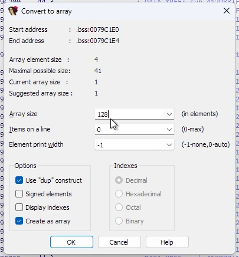
When I do this, IDA tells me that the Save_Screenshot
function is referenced at index 87 (0x57) of
0x79bde0[].
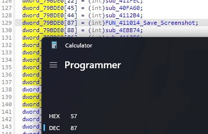
Since we know TAW uses DirectInput (f22.dat imports DINPUT.DLL), we
can look up in a list of
DirectInput key codes and see that 0x57 is the code for
the F11 key. And wouldn’t you know it, in the list of
previously discovered debug commands for ADF, SHIFT+F11
takes a screenshot:
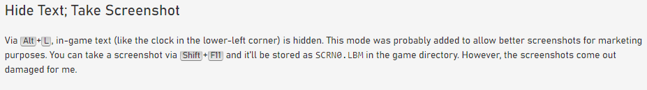
So, it is looking likely that a) the screenshot function is also
SHIFT+F11 in TAW like it was in ADF, b)
0xce8481 stores the DirectInput key code for the key
pressed, and c) 0x79bde0[] is an array of function pointers
per key, also indexed by DirectInput code, which applies when the SHIFT
key is pressed along with the key in question.
I rename some of the values in sub_412ca0 above (now
renamed FUN_412CA0_Process_Key_Press) to reflect what we
have learned:
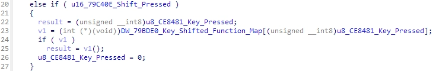
Note that we intuit that the variable tested before accessing the
SHIFT function map, 0x79c40e, is a
Shift_Pressed flag, which is set:
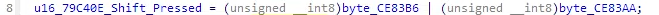
Using these memory locations 0xce83b6 and
0xce83aa, plus 0xce8481 which stores the key
being pressed, and a little (okay, a lot!) of searching, I find the
following code in sub_5307dc:
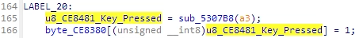
0xce8380[] appears to be an array of key press states,
with the appropriate index set to 1 if that key is pressed. Given we
know that 0xce8481 contains the DirectInput code of the key
being pressed, we can tell IDA that 0xce8380 is an array,
rename it to Key_Status, and see how that affects Process_Key_Press:
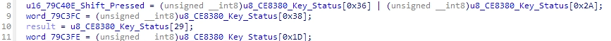
Now we can look up these indices in the DirectInput key map, where we
find 0x36 is RSHIFT, 0x2a is
LSHIFT, 0x38 is LMENU (Left ALT),
and 0x1d is LCONTROL. Given these values, we
can intuit that 0x79c3fc is true when ALT is pressed, and
so the function pointer map 0x79bfe0[] must be used for
ALT+key commands. Also, 0x79c1e0 must apply for open keys
(i.e. keys pressed when neither SHIFT nor ALT is presssed).
0x79c3fe is true when CTRL is pressed, but doesn’t seem to
be a factor here. After some further renaming:
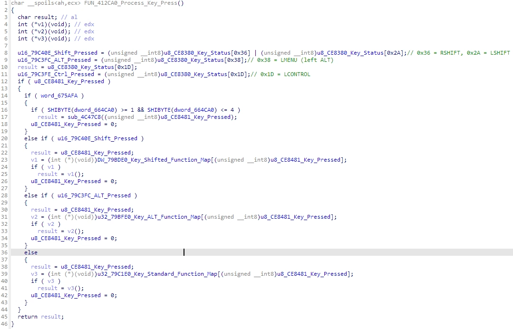
Armed with this info, we could go back to the set up of our function
pointer tables in sub_412d88, and the index into each of
the three function pointer tables will tell us the corresponding key
press that calls that function (either open key, SHIFT+key, or ALT+key).
We could then cross-reference that against the Keyboard map in the TAW
manual, and we would then know what each of those 136 functions does.
That’s a significant attack vector for reversing the game. However,
today I’m interested in figuring out where (if anywhere) the debug/cheat
enable code is, which we can narrow down now that we know something
about how inputs are processed.
The Process_Key_Press function is only called from one
place, sub_413fec:
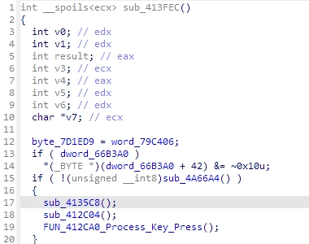
Immediately before, it calls sub_412c04, which looks
like this:
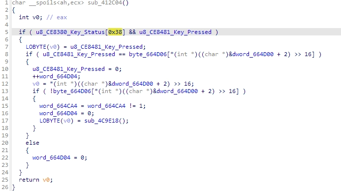
We already know that 0x38 is Left ALT, so line 5 says we
only process this function if ALT is down and another key is being
pressed, which sounds promising.
Line 8 checks to see if the key being pressed matches the value in an
array starting at 0x664d06, where the index into this array
is the top 16 bits of 0x664d02
(i.e. 0x664d04).
If there is no match, we set 0x664d04 to zero and
return. If it does match, we set the key pressed to zero and increment
0x664d04 by 1. Note that setting the key pressed status to
zero effectively “swallows” the keypress before the next function
Process_Key_Press tries to process it, which is what we
might expect a debug/cheat code function to do. So 0x664d04
is a counter of how many keypresses have matched the contents of array
0x664d06[]. Is 0x664d06 the debug/cheat enable
code?
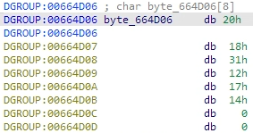
Assuming these are DirectInput key codes, we get: D
O N E I
T /0 /0
Given the debug/cheat unlock in ADF was to hold down ALT
and type D I D I
T, it would be a nice touch if the unlock for TAW was
updated to D O N E
I T!
So let’s wrap up with some renaming. sub_412c04 is our
debug/cheat code checking function. 0x664d06 is the unlock
code.
What does it do when a successful character has been found, in the
second half of the checking function, to actually enable the debug/cheat
mode? After increasing the correct character counter, we check the next
letter in the unlock code to see if it is null. If so, we have reached
the end of the sequence successfully, so we flip a flag in
0x664ca4 (presumably, a “debug/cheats enabled” flag), reset
the correct keypress counter to zero, and call sub_4c9e18.
Note that sub_411014, the Save_Screenshot
function, checked 0x664ca4 was true before saving the
screenshot, adding further weight that this is a “debug/cheats enabled”
flag.
Let’s save that and test DONEIT, by launching the game,
entering a mission, holding ALT and typing D
O N E I
T, then pressing SHIFT+F11 to see if we get a
SCRNx.LBM saved in the game folder…
Success!
Trying other codes appears to match the same key commands as ADF,
e.g. ALT+K shifts time forward by 2 hours.
ALT+F10 and ALT+F11 goes through various debug
outputs on screen. ALT+D rearms your aircraft.
Here ends a successful static analysis. We have discovered a debug/cheat unlock code that has until now gone undiscovered, as far as I can tell. Not bad for a few hours’ work.
We have also inadvertently discovered two rich opportunities for
further reversing. Firstly sub_412d88, which sets function
pointers for all of the possible key commands in the game. By
referencing the keyboard guide included with the game, we could match
these function pointers to functionality in the game, e.g. since the
G key operates the landing gear, the DirectInput code for
G is 0x22, we know that the function pointer
assigned to 0x79c268, sub_410c58, must toggle
the gear. We can immediately understand what over one hundred functions
do, thanks to this function. Secondly, we found some debug format
strings which print information about the world, including the player.
By looking at the function where these format strings are used, we could
start to intuit where in memory the player information is held and build
out the player class/struct, which is a key data structure for any
game.
But for now, on the quest to find the unlock code for TAW’s debug/cheat menu, I can say that we have ‘DONEIT’.